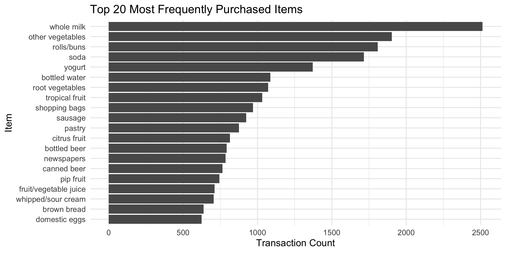
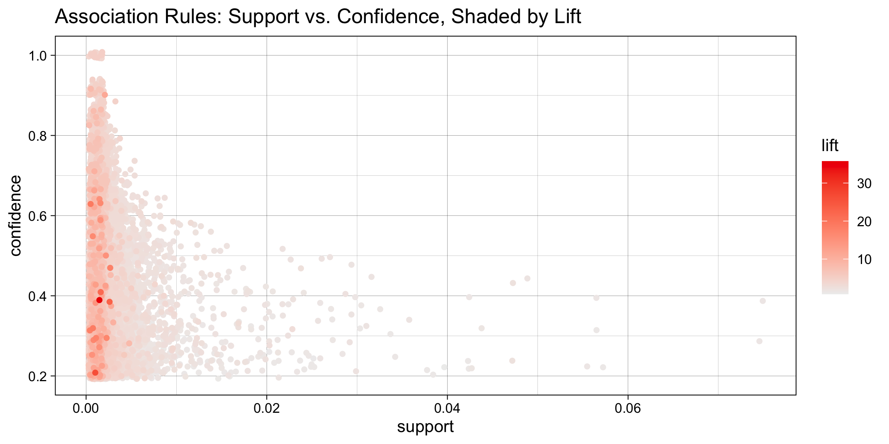
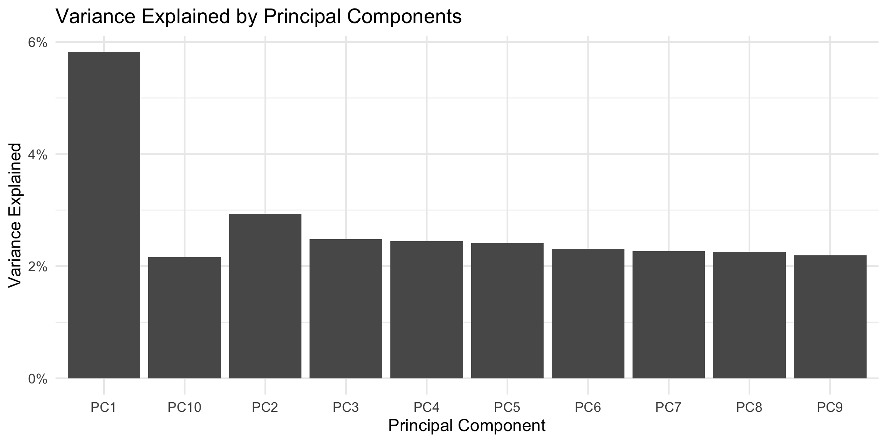
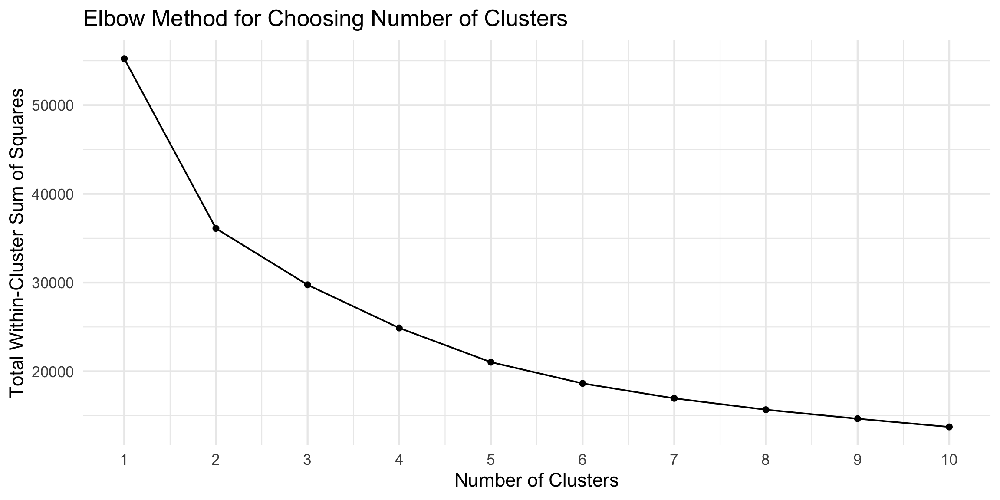
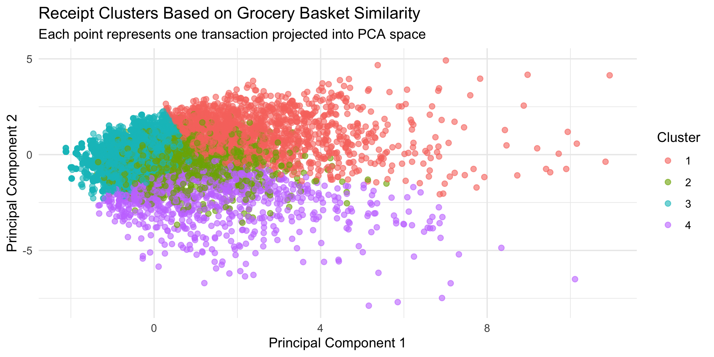
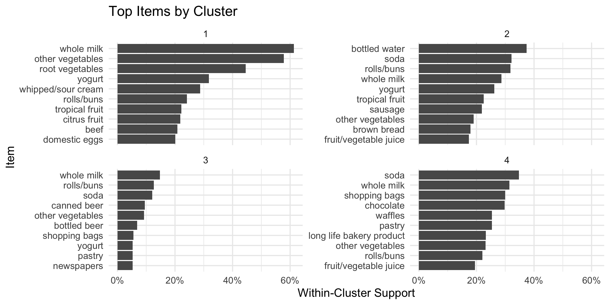

This project uses the Groceries Dataset to perform Market Basket Analysis. Each row in the dataset is a transaction, or receipt, and each non-empty column contains an item purchased in that transaction.
The analysis focuses on association-rule mining using the
arules package. The final report includes:
required_packages <- c(
"arules",
"arulesViz",
"tidyverse",
"Matrix",
"cluster",
"factoextra",
"tidytext",
"jsonlite",
"scales"
)
new_packages <- required_packages[!(required_packages %in% installed.packages()[, "Package"])]
if (length(new_packages) > 0) {
install.packages(new_packages, repos = "https://cloud.r-project.org")
}
library(arules)
library(arulesViz)
library(tidyverse)
library(Matrix)
library(cluster)
library(factoextra)
library(tidytext)
library(jsonlite)
library(scales)The CSV file does not have column headers. Each line is one receipt, and the items in that row are the contents of the basket.
file_path <- "GroceryDataSet.csv"
raw_groceries <- read.csv(
file_path,
header = FALSE,
stringsAsFactors = FALSE,
na.strings = c("", "NA")
)
head(raw_groceries, 10)## V1 V2 V3 V4
## 1 citrus fruit semi-finished bread margarine ready soups
## 2 tropical fruit yogurt coffee <NA>
## 3 whole milk <NA> <NA> <NA>
## 4 pip fruit yogurt cream cheese meat spreads
## 5 other vegetables whole milk condensed milk long life bakery product
## 6 whole milk butter yogurt rice
## 7 rolls/buns <NA> <NA> <NA>
## 8 other vegetables UHT-milk rolls/buns bottled beer
## 9 pot plants <NA> <NA> <NA>
## 10 whole milk cereals <NA> <NA>
## V5 V6 V7 V8 V9 V10 V11 V12 V13 V14 V15 V16
## 1 <NA> <NA> <NA> <NA> <NA> <NA> <NA> <NA> <NA> <NA> <NA> <NA>
## 2 <NA> <NA> <NA> <NA> <NA> <NA> <NA> <NA> <NA> <NA> <NA> <NA>
## 3 <NA> <NA> <NA> <NA> <NA> <NA> <NA> <NA> <NA> <NA> <NA> <NA>
## 4 <NA> <NA> <NA> <NA> <NA> <NA> <NA> <NA> <NA> <NA> <NA> <NA>
## 5 <NA> <NA> <NA> <NA> <NA> <NA> <NA> <NA> <NA> <NA> <NA> <NA>
## 6 abrasive cleaner <NA> <NA> <NA> <NA> <NA> <NA> <NA> <NA> <NA> <NA> <NA>
## 7 <NA> <NA> <NA> <NA> <NA> <NA> <NA> <NA> <NA> <NA> <NA> <NA>
## 8 liquor (appetizer) <NA> <NA> <NA> <NA> <NA> <NA> <NA> <NA> <NA> <NA> <NA>
## 9 <NA> <NA> <NA> <NA> <NA> <NA> <NA> <NA> <NA> <NA> <NA> <NA>
## 10 <NA> <NA> <NA> <NA> <NA> <NA> <NA> <NA> <NA> <NA> <NA> <NA>
## V17 V18 V19 V20 V21 V22 V23 V24 V25 V26 V27 V28 V29 V30 V31
## 1 <NA> <NA> <NA> <NA> <NA> <NA> <NA> <NA> <NA> <NA> <NA> <NA> <NA> <NA> <NA>
## 2 <NA> <NA> <NA> <NA> <NA> <NA> <NA> <NA> <NA> <NA> <NA> <NA> <NA> <NA> <NA>
## 3 <NA> <NA> <NA> <NA> <NA> <NA> <NA> <NA> <NA> <NA> <NA> <NA> <NA> <NA> <NA>
## 4 <NA> <NA> <NA> <NA> <NA> <NA> <NA> <NA> <NA> <NA> <NA> <NA> <NA> <NA> <NA>
## 5 <NA> <NA> <NA> <NA> <NA> <NA> <NA> <NA> <NA> <NA> <NA> <NA> <NA> <NA> <NA>
## 6 <NA> <NA> <NA> <NA> <NA> <NA> <NA> <NA> <NA> <NA> <NA> <NA> <NA> <NA> <NA>
## 7 <NA> <NA> <NA> <NA> <NA> <NA> <NA> <NA> <NA> <NA> <NA> <NA> <NA> <NA> <NA>
## 8 <NA> <NA> <NA> <NA> <NA> <NA> <NA> <NA> <NA> <NA> <NA> <NA> <NA> <NA> <NA>
## 9 <NA> <NA> <NA> <NA> <NA> <NA> <NA> <NA> <NA> <NA> <NA> <NA> <NA> <NA> <NA>
## 10 <NA> <NA> <NA> <NA> <NA> <NA> <NA> <NA> <NA> <NA> <NA> <NA> <NA> <NA> <NA>
## V32
## 1 <NA>
## 2 <NA>
## 3 <NA>
## 4 <NA>
## 5 <NA>
## 6 <NA>
## 7 <NA>
## 8 <NA>
## 9 <NA>
## 10 <NA>The arules package expects transactions in a list
format, where each list element is a basket.
grocery_list <- apply(raw_groceries, 1, function(row) {
items <- row[!is.na(row) & trimws(row) != ""]
items <- trimws(items)
unique(items)
})
transactions <- as(grocery_list, "transactions")
transactions## transactions in sparse format with
## 9835 transactions (rows) and
## 169 items (columns)summary(transactions)## transactions as itemMatrix in sparse format with
## 9835 rows (elements/itemsets/transactions) and
## 169 columns (items) and a density of 0.02609146
##
## most frequent items:
## whole milk other vegetables rolls/buns soda
## 2513 1903 1809 1715
## yogurt (Other)
## 1372 34055
##
## element (itemset/transaction) length distribution:
## sizes
## 1 2 3 4 5 6 7 8 9 10 11 12 13 14 15 16
## 2159 1643 1299 1005 855 645 545 438 350 246 182 117 78 77 55 46
## 17 18 19 20 21 22 23 24 26 27 28 29 32
## 29 14 14 9 11 4 6 1 1 1 1 3 1
##
## Min. 1st Qu. Median Mean 3rd Qu. Max.
## 1.000 2.000 3.000 4.409 6.000 32.000
##
## includes extended item information - examples:
## labels
## 1 abrasive cleaner
## 2 artif. sweetener
## 3 baby cosmeticsbasket_sizes <- size(transactions)
basket_summary <- tibble(
metric = c("Number of transactions", "Number of unique items", "Average basket size", "Median basket size", "Largest basket"),
value = c(
length(transactions),
length(itemLabels(transactions)),
round(mean(basket_sizes), 2),
median(basket_sizes),
max(basket_sizes)
)
)
basket_summary## # A tibble: 5 x 2
## metric value
## <chr> <dbl>
## 1 Number of transactions 9835
## 2 Number of unique items 169
## 3 Average basket size 4.41
## 4 Median basket size 3
## 5 Largest basket 32item_frequency <- itemFrequency(transactions, type = "absolute")
item_frequency_table <- tibble(
item = names(item_frequency),
count = as.integer(item_frequency),
support = itemFrequency(transactions, type = "relative")
) %>%
arrange(desc(count))
top_20_items <- item_frequency_table %>% slice_head(n = 20)
top_20_items## # A tibble: 20 x 3
## item count support
## <chr> <int> <dbl>
## 1 whole milk 2513 0.256
## 2 other vegetables 1903 0.193
## 3 rolls/buns 1809 0.184
## 4 soda 1715 0.174
## 5 yogurt 1372 0.140
## 6 bottled water 1087 0.111
## 7 root vegetables 1072 0.109
## 8 tropical fruit 1032 0.105
## 9 shopping bags 969 0.0985
## 10 sausage 924 0.0940
## 11 pastry 875 0.0890
## 12 citrus fruit 814 0.0828
## 13 bottled beer 792 0.0805
## 14 newspapers 785 0.0798
## 15 canned beer 764 0.0777
## 16 pip fruit 744 0.0756
## 17 fruit/vegetable juice 711 0.0723
## 18 whipped/sour cream 705 0.0717
## 19 brown bread 638 0.0649
## 20 domestic eggs 624 0.0634top_20_items %>%
ggplot(aes(x = reorder(item, count), y = count)) +
geom_col() +
coord_flip() +
labs(
title = "Top 20 Most Frequently Purchased Items",
x = "Item",
y = "Transaction Count"
) +
theme_minimal()
Association rules are written in the form:
\[ A \Rightarrow B \]
This means that when item or itemset A appears in a basket, item or itemset B is likely to appear as well.
The three key metrics are:
A lift value greater than 1 suggests a positive association.
The thresholds below are intentionally moderate so the analysis produces enough rules while avoiding extremely rare patterns.
rules <- apriori(
transactions,
parameter = list(
supp = 0.001,
conf = 0.20,
minlen = 2,
maxlen = 5,
target = "rules"
)
)## Apriori
##
## Parameter specification:
## confidence minval smax arem aval originalSupport maxtime support minlen
## 0.2 0.1 1 none FALSE TRUE 5 0.001 2
## maxlen target ext
## 5 rules TRUE
##
## Algorithmic control:
## filter tree heap memopt load sort verbose
## 0.1 TRUE TRUE FALSE TRUE 2 TRUE
##
## Absolute minimum support count: 9
##
## set item appearances ...[0 item(s)] done [0.00s].
## set transactions ...[169 item(s), 9835 transaction(s)] done [0.00s].
## sorting and recoding items ... [157 item(s)] done [0.00s].
## creating transaction tree ... done [0.00s].
## checking subsets of size 1 2 3 4 5## done [0.00s].
## writing ... [21573 rule(s)] done [0.00s].
## creating S4 object ... done [0.00s].rules## set of 21573 rulessummary(rules)## set of 21573 rules
##
## rule length distribution (lhs + rhs):sizes
## 2 3 4 5
## 620 9337 9824 1792
##
## Min. 1st Qu. Median Mean 3rd Qu. Max.
## 2.000 3.000 4.000 3.593 4.000 5.000
##
## summary of quality measures:
## support confidence coverage lift
## Min. :0.001017 Min. :0.2000 Min. :0.001017 Min. : 0.8028
## 1st Qu.:0.001118 1st Qu.:0.2632 1st Qu.:0.002745 1st Qu.: 2.1155
## Median :0.001322 Median :0.3548 Median :0.004169 Median : 2.7556
## Mean :0.001950 Mean :0.3960 Mean :0.005851 Mean : 3.0160
## 3rd Qu.:0.001932 3rd Qu.:0.5000 3rd Qu.:0.006101 3rd Qu.: 3.6119
## Max. :0.074835 Max. :1.0000 Max. :0.255516 Max. :35.7158
## count
## Min. : 10.00
## 1st Qu.: 11.00
## Median : 13.00
## Mean : 19.18
## 3rd Qu.: 19.00
## Max. :736.00
##
## mining info:
## data ntransactions support confidence
## transactions 9835 0.001 0.2
## call
## apriori(data = transactions, parameter = list(supp = 0.001, conf = 0.2, minlen = 2, maxlen = 5, target = "rules"))rules_sorted <- sort(rules, by = "lift", decreasing = TRUE)
redundant_rules <- is.redundant(rules_sorted)
rules_pruned <- rules_sorted[!redundant_rules]
rules_pruned## set of 18606 rulessummary(rules_pruned)## set of 18606 rules
##
## rule length distribution (lhs + rhs):sizes
## 2 3 4 5
## 620 8543 8098 1345
##
## Min. 1st Qu. Median Mean 3rd Qu. Max.
## 2.000 3.000 4.000 3.546 4.000 5.000
##
## summary of quality measures:
## support confidence coverage lift
## Min. :0.001017 Min. :0.2000 Min. :0.001017 Min. : 0.8028
## 1st Qu.:0.001118 1st Qu.:0.2642 1st Qu.:0.002745 1st Qu.: 2.2483
## Median :0.001423 Median :0.3571 Median :0.004169 Median : 2.8717
## Mean :0.002010 Mean :0.4013 Mean :0.005988 Mean : 3.1577
## 3rd Qu.:0.001932 3rd Qu.:0.5088 3rd Qu.:0.006202 3rd Qu.: 3.7532
## Max. :0.074835 Max. :1.0000 Max. :0.255516 Max. :35.7158
## count
## Min. : 10.00
## 1st Qu.: 11.00
## Median : 14.00
## Mean : 19.77
## 3rd Qu.: 19.00
## Max. :736.00
##
## mining info:
## data ntransactions support confidence
## transactions 9835 0.001 0.2
## call
## apriori(data = transactions, parameter = list(supp = 0.001, conf = 0.2, minlen = 2, maxlen = 5, target = "rules"))top_10_rules <- head(sort(rules_pruned, by = "lift", decreasing = TRUE), 10)
top_10_rules_table <- as(top_10_rules, "data.frame") %>%
as_tibble() %>%
mutate(
support = round(support, 4),
confidence = round(confidence, 4),
lift = round(lift, 4),
count = as.integer(count)
)
top_10_rules_table## # A tibble: 10 x 6
## rules support confidence coverage lift count
## <chr> <dbl> <dbl> <dbl> <dbl> <int>
## 1 {bottled beer,red/blush wine} => {li~ 0.0019 0.396 0.00488 35.7 19
## 2 {hamburger meat,soda} => {Instant fo~ 0.0012 0.210 0.00580 26.2 12
## 3 {ham,white bread} => {processed chee~ 0.0019 0.38 0.00508 22.9 19
## 4 {bottled beer,liquor} => {red/blush ~ 0.0019 0.413 0.00468 21.5 19
## 5 {Instant food products,soda} => {ham~ 0.0012 0.632 0.00193 19.0 12
## 6 {curd,sugar} => {flour} 0.0011 0.324 0.00346 18.6 11
## 7 {baking powder,sugar} => {flour} 0.001 0.312 0.00325 18.0 10
## 8 {processed cheese,white bread} => {h~ 0.0019 0.463 0.00417 17.8 19
## 9 {fruit/vegetable juice,ham} => {proc~ 0.0011 0.290 0.00386 17.5 11
## 10 {margarine,sugar} => {flour} 0.0016 0.296 0.00549 17.0 16inspect(top_10_rules)## lhs rhs support
## [1] {bottled beer, red/blush wine} => {liquor} 0.001931876
## [2] {hamburger meat, soda} => {Instant food products} 0.001220132
## [3] {ham, white bread} => {processed cheese} 0.001931876
## [4] {bottled beer, liquor} => {red/blush wine} 0.001931876
## [5] {Instant food products, soda} => {hamburger meat} 0.001220132
## [6] {curd, sugar} => {flour} 0.001118454
## [7] {baking powder, sugar} => {flour} 0.001016777
## [8] {processed cheese, white bread} => {ham} 0.001931876
## [9] {fruit/vegetable juice, ham} => {processed cheese} 0.001118454
## [10] {margarine, sugar} => {flour} 0.001626843
## confidence coverage lift count
## [1] 0.3958333 0.004880529 35.71579 19
## [2] 0.2105263 0.005795628 26.20919 12
## [3] 0.3800000 0.005083884 22.92822 19
## [4] 0.4130435 0.004677173 21.49356 19
## [5] 0.6315789 0.001931876 18.99565 12
## [6] 0.3235294 0.003457041 18.60767 11
## [7] 0.3125000 0.003253686 17.97332 10
## [8] 0.4634146 0.004168785 17.80345 19
## [9] 0.2894737 0.003863752 17.46610 11
## [10] 0.2962963 0.005490595 17.04137 16plot(
rules_pruned,
method = "scatterplot",
measure = c("support", "confidence"),
shading = "lift",
main = "Association Rules: Support vs. Confidence, Shaded by Lift"
)
plot(
head(rules_pruned, 20),
method = "graph",
engine = "htmlwidget"
)graph_rules <- head(sort(rules_pruned, by = "lift", decreasing = TRUE), 20)
graph_rules_df <- as(graph_rules, "data.frame") %>%
as_tibble() %>%
mutate(
rule_id = paste0("rule_", row_number()),
lhs = labels(lhs(graph_rules)),
rhs = labels(rhs(graph_rules))
)
parse_itemset <- function(label) {
cleaned <- stringr::str_remove_all(label, "\\{|\\}")
if (nchar(cleaned) == 0) {
character(0)
} else {
stringr::str_split(cleaned, ",\\s*")[[1]]
}
}
graph_rules_df <- graph_rules_df %>%
mutate(
lhs_items = map(lhs, parse_itemset),
rhs_items = map(rhs, parse_itemset),
node_strength = lift
)
graph_item_names <- sort(unique(c(unlist(graph_rules_df$lhs_items), unlist(graph_rules_df$rhs_items))))
graph_item_stats <- item_frequency_table %>%
filter(item %in% graph_item_names) %>%
mutate(
connected_lift_mean = map_dbl(item, function(item_name) {
connected_rules <- map_lgl(seq_len(nrow(graph_rules_df)), function(i) {
item_name %in% graph_rules_df$lhs_items[[i]] ||
item_name %in% graph_rules_df$rhs_items[[i]]
})
if (any(connected_rules)) {
mean(graph_rules_df$lift[connected_rules])
} else {
support
}
}),
node_strength = connected_lift_mean
) %>%
arrange(desc(node_strength), desc(support))
rules_graph_data <- list(
graph = list(
title = "Association Rules Network",
z_axis = "Association prominence",
note = "Rule nodes use lift; item nodes use the average lift of connected rules."
),
items = graph_item_stats %>%
select(item, count, support, connected_lift_mean, node_strength),
rules = graph_rules_df %>%
select(
rule_id,
lhs,
rhs,
lhs_items,
rhs_items,
support,
confidence,
lift,
count,
node_strength
)
)
export_paths <- c(
"rules_graph.json",
file.path("basket-viz", "public", "rules_graph.json")
)
walk(export_paths, function(path) {
dir.create(dirname(path), recursive = TRUE, showWarnings = FALSE)
write_json(
rules_graph_data,
path = path,
pretty = TRUE,
auto_unbox = TRUE
)
})
head(graph_rules_df, 10)## # A tibble: 10 x 12
## rules support confidence coverage lift count rule_id lhs rhs lhs_items
## <chr> <dbl> <dbl> <dbl> <dbl> <int> <chr> <chr> <chr> <list>
## 1 {bottl~ 0.00193 0.396 0.00488 35.7 19 rule_1 {bot~ {liq~ <chr [2]>
## 2 {hambu~ 0.00122 0.211 0.00580 26.2 12 rule_2 {ham~ {Ins~ <chr [2]>
## 3 {ham,w~ 0.00193 0.38 0.00508 22.9 19 rule_3 {ham~ {pro~ <chr [2]>
## 4 {bottl~ 0.00193 0.413 0.00468 21.5 19 rule_4 {bot~ {red~ <chr [2]>
## 5 {Insta~ 0.00122 0.632 0.00193 19.0 12 rule_5 {Ins~ {ham~ <chr [2]>
## 6 {curd,~ 0.00112 0.324 0.00346 18.6 11 rule_6 {cur~ {flo~ <chr [2]>
## 7 {bakin~ 0.00102 0.312 0.00325 18.0 10 rule_7 {bak~ {flo~ <chr [2]>
## 8 {proce~ 0.00193 0.463 0.00417 17.8 19 rule_8 {pro~ {ham} <chr [2]>
## 9 {fruit~ 0.00112 0.289 0.00386 17.5 11 rule_9 {fru~ {pro~ <chr [2]>
## 10 {marga~ 0.00163 0.296 0.00549 17.0 16 rule_10 {mar~ {flo~ <chr [2]>
## # i 2 more variables: rhs_items <list>, node_strength <dbl>The highest-lift rules identify item combinations that occur together much more often than expected by chance. These rules are especially useful for:
A high-lift rule does not automatically mean the items are frequently purchased overall. It means the items are unusually strongly associated relative to their individual purchase frequencies.
Association rules identify relationships between specific items. Cluster analysis answers a different question:
Which receipts look similar overall?
For this section, each transaction is converted into a binary vector where:
1 means the item appears in the basket0 means the item does not appear in the basketBecause the full item matrix can be sparse and high-dimensional, this analysis focuses on the most frequently purchased items.
transaction_matrix <- as(transactions, "ngCMatrix")
transaction_matrix <- t(transaction_matrix)
colnames(transaction_matrix) <- itemLabels(transactions)
# Keep the top N items to make clustering more interpretable.
top_n_items <- 50
top_items <- item_frequency_table %>%
slice_head(n = top_n_items) %>%
pull(item)
cluster_matrix <- as.matrix(transaction_matrix[, top_items])
cluster_matrix[1:10, 1:10]## whole milk other vegetables rolls/buns soda yogurt bottled water
## [1,] FALSE FALSE FALSE FALSE FALSE FALSE
## [2,] FALSE FALSE FALSE FALSE TRUE FALSE
## [3,] TRUE FALSE FALSE FALSE FALSE FALSE
## [4,] FALSE FALSE FALSE FALSE TRUE FALSE
## [5,] TRUE TRUE FALSE FALSE FALSE FALSE
## [6,] TRUE FALSE FALSE FALSE TRUE FALSE
## [7,] FALSE FALSE TRUE FALSE FALSE FALSE
## [8,] FALSE TRUE TRUE FALSE FALSE FALSE
## [9,] FALSE FALSE FALSE FALSE FALSE FALSE
## [10,] TRUE FALSE FALSE FALSE FALSE FALSE
## root vegetables tropical fruit shopping bags sausage
## [1,] FALSE FALSE FALSE FALSE
## [2,] FALSE TRUE FALSE FALSE
## [3,] FALSE FALSE FALSE FALSE
## [4,] FALSE FALSE FALSE FALSE
## [5,] FALSE FALSE FALSE FALSE
## [6,] FALSE FALSE FALSE FALSE
## [7,] FALSE FALSE FALSE FALSE
## [8,] FALSE FALSE FALSE FALSE
## [9,] FALSE FALSE FALSE FALSE
## [10,] FALSE FALSE FALSE FALSEpca_result <- prcomp(cluster_matrix, center = TRUE, scale. = TRUE)
pca_scores <- as_tibble(pca_result$x[, 1:3]) %>%
rename(PC1 = 1, PC2 = 2, PC3 = 3)
variance_explained <- tibble(
component = paste0("PC", seq_along(pca_result$sdev)),
variance = pca_result$sdev^2 / sum(pca_result$sdev^2)
)
variance_explained %>%
slice_head(n = 10)## # A tibble: 10 x 2
## component variance
## <chr> <dbl>
## 1 PC1 0.0582
## 2 PC2 0.0293
## 3 PC3 0.0248
## 4 PC4 0.0244
## 5 PC5 0.0241
## 6 PC6 0.0231
## 7 PC7 0.0227
## 8 PC8 0.0225
## 9 PC9 0.0219
## 10 PC10 0.0216variance_explained %>%
slice_head(n = 10) %>%
ggplot(aes(x = component, y = variance)) +
geom_col() +
scale_y_continuous(labels = percent_format()) +
labs(
title = "Variance Explained by Principal Components",
x = "Principal Component",
y = "Variance Explained"
) +
theme_minimal()
set.seed(42)
wss <- map_dbl(1:10, function(k) {
kmeans(pca_scores, centers = k, nstart = 25)$tot.withinss
})
elbow_table <- tibble(k = 1:10, within_cluster_sum_squares = wss)
elbow_table## # A tibble: 10 x 2
## k within_cluster_sum_squares
## <int> <dbl>
## 1 1 55241.
## 2 2 36108.
## 3 3 29745.
## 4 4 24884.
## 5 5 21028.
## 6 6 18636.
## 7 7 16950.
## 8 8 15670.
## 9 9 14655.
## 10 10 13731.elbow_table %>%
ggplot(aes(x = k, y = within_cluster_sum_squares)) +
geom_line() +
geom_point() +
scale_x_continuous(breaks = 1:10) +
labs(
title = "Elbow Method for Choosing Number of Clusters",
x = "Number of Clusters",
y = "Total Within-Cluster Sum of Squares"
) +
theme_minimal()
This report uses k = 4 as a simple, interpretable
default. Adjust this value if the elbow plot suggests a better
choice.
set.seed(42)
k_value <- 4
kmeans_result <- kmeans(pca_scores, centers = k_value, nstart = 50)
clustered_baskets <- pca_scores %>%
mutate(
transaction_id = row_number(),
cluster = factor(kmeans_result$cluster),
basket_size = basket_sizes
)
clustered_baskets %>%
count(cluster, name = "number_of_transactions")## # A tibble: 4 x 2
## cluster number_of_transactions
## <fct> <int>
## 1 1 1458
## 2 2 1639
## 3 3 5826
## 4 4 912clustered_baskets %>%
ggplot(aes(x = PC1, y = PC2, color = cluster)) +
geom_point(alpha = 0.6, size = 1.8) +
labs(
title = "Receipt Clusters Based on Grocery Basket Similarity",
subtitle = "Each point represents one transaction projected into PCA space",
x = "Principal Component 1",
y = "Principal Component 2",
color = "Cluster"
) +
theme_minimal()
The table below shows which items are most common within each cluster. This helps explain what each cluster represents.
cluster_profiles <- map_dfr(levels(clustered_baskets$cluster), function(cl) {
transaction_ids <- clustered_baskets %>%
filter(cluster == cl) %>%
pull(transaction_id)
item_rates <- colMeans(cluster_matrix[transaction_ids, , drop = FALSE])
tibble(
cluster = cl,
item = names(item_rates),
within_cluster_support = item_rates
) %>%
arrange(desc(within_cluster_support)) %>%
slice_head(n = 10)
})
cluster_profiles## # A tibble: 40 x 3
## cluster item within_cluster_support
## <chr> <chr> <dbl>
## 1 1 whole milk 0.613
## 2 1 other vegetables 0.578
## 3 1 root vegetables 0.446
## 4 1 yogurt 0.318
## 5 1 whipped/sour cream 0.287
## 6 1 rolls/buns 0.241
## 7 1 tropical fruit 0.222
## 8 1 citrus fruit 0.218
## 9 1 beef 0.209
## 10 1 domestic eggs 0.201
## # i 30 more rowscluster_profiles %>%
mutate(item = reorder_within(item, within_cluster_support, cluster)) %>%
ggplot(aes(x = item, y = within_cluster_support)) +
geom_col() +
coord_flip() +
facet_wrap(~ cluster, scales = "free_y") +
scale_x_reordered() +
scale_y_continuous(labels = percent_format()) +
labs(
title = "Top Items by Cluster",
x = "Item",
y = "Within-Cluster Support"
) +
theme_minimal()
This creates a JSON file where each receipt becomes one point in a 3D scene.
Suggested visual design:
items_by_transaction <- map_chr(grocery_list, ~ paste(.x, collapse = ", "))
item_support_map <- setNames(item_frequency_table$support, item_frequency_table$item)
basket_rarity_score <- map_dbl(grocery_list, function(items) {
support_values <- item_support_map[items]
mean(-log10(support_values), na.rm = TRUE)
})
basket_rarity_scaled <- rescale(basket_rarity_score, to = c(-2.75, 2.75))
threejs_data <- clustered_baskets %>%
mutate(
x = PC1,
y = PC2,
z = basket_rarity_scaled,
rarity_score = basket_rarity_score,
rarity_score_scaled = basket_rarity_scaled,
items = items_by_transaction,
basket_size_scaled = rescale(basket_size, to = c(2, 10))
) %>%
select(
transaction_id,
x,
y,
z,
cluster,
basket_size,
basket_size_scaled,
rarity_score,
rarity_score_scaled,
items
)
export_paths <- c(
"basket_clusters.json",
file.path("basket-viz", "public", "basket_clusters.json")
)
walk(export_paths, function(path) {
dir.create(dirname(path), recursive = TRUE, showWarnings = FALSE)
write_json(
threejs_data,
path = path,
pretty = TRUE,
auto_unbox = TRUE
)
})
head(threejs_data, 10)## # A tibble: 10 x 10
## transaction_id x y z cluster basket_size basket_size_scaled
## <int> <dbl> <dbl> <dbl> <fct> <int> <dbl>
## 1 1 -0.421 1.01 -0.571 3 4 2.77
## 2 2 -0.0400 -0.0248 -1.90 2 3 2.52
## 3 3 -1.14 0.717 -2.75 3 1 2
## 4 4 0.386 -0.0274 -1.09 2 4 2.77
## 5 5 0.186 -0.122 -1.59 3 4 2.77
## 6 6 0.385 1.00 -1.06 3 5 3.03
## 7 7 -1.50 0.317 -2.47 3 1 2
## 8 8 -0.424 0.544 -1.51 2 5 3.03
## 9 9 -1.74 0.388 -0.451 3 1 2
## 10 10 -1.14 0.717 -1.13 3 2 2.26
## # i 3 more variables: rarity_score <dbl>, rarity_score_scaled <dbl>,
## # items <chr>presentation_report <- list(
summary = list(
total_transactions = length(transactions),
unique_items = length(itemLabels(transactions)),
average_basket_size = round(mean(basket_sizes), 2),
median_basket_size = as.integer(median(basket_sizes)),
largest_basket = as.integer(max(basket_sizes)),
total_rules = as.integer(length(rules_pruned)),
strongest_lift = round(top_10_rules_table$lift[1], 4),
cluster_count = k_value
),
item_frequency = list(
top_items = top_20_items %>%
mutate(
support_pct = support * 100
) %>%
select(item, count, support, support_pct)
),
association_rules = list(
top_rules = top_10_rules_table %>%
mutate(
lhs = labels(lhs(top_10_rules)),
rhs = labels(rhs(top_10_rules))
) %>%
select(lhs, rhs, support, confidence, coverage, lift, count)
),
clustering = list(
variance_explained = variance_explained %>%
slice_head(n = 10) %>%
mutate(variance_pct = variance * 100),
elbow = elbow_table,
cluster_counts = clustered_baskets %>%
count(cluster, name = "count") %>%
arrange(cluster),
cluster_profiles = cluster_profiles %>%
mutate(
cluster = as.character(cluster),
within_cluster_support_pct = within_cluster_support * 100
) %>%
select(cluster, item, within_cluster_support, within_cluster_support_pct)
)
)
presentation_paths <- c(
"presentation_report.json",
file.path("basket-viz", "public", "presentation_report.json")
)
walk(presentation_paths, function(path) {
dir.create(dirname(path), recursive = TRUE, showWarnings = FALSE)
write_json(
presentation_report,
path = path,
pretty = TRUE,
auto_unbox = TRUE
)
})
presentation_report## $summary
## $summary$total_transactions
## [1] 9835
##
## $summary$unique_items
## [1] 169
##
## $summary$average_basket_size
## [1] 4.41
##
## $summary$median_basket_size
## [1] 3
##
## $summary$largest_basket
## [1] 32
##
## $summary$total_rules
## [1] 18606
##
## $summary$strongest_lift
## [1] 35.7158
##
## $summary$cluster_count
## [1] 4
##
##
## $item_frequency
## $item_frequency$top_items
## # A tibble: 20 x 4
## item count support support_pct
## <chr> <int> <dbl> <dbl>
## 1 whole milk 2513 0.256 25.6
## 2 other vegetables 1903 0.193 19.3
## 3 rolls/buns 1809 0.184 18.4
## 4 soda 1715 0.174 17.4
## 5 yogurt 1372 0.140 14.0
## 6 bottled water 1087 0.111 11.1
## 7 root vegetables 1072 0.109 10.9
## 8 tropical fruit 1032 0.105 10.5
## 9 shopping bags 969 0.0985 9.85
## 10 sausage 924 0.0940 9.40
## 11 pastry 875 0.0890 8.90
## 12 citrus fruit 814 0.0828 8.28
## 13 bottled beer 792 0.0805 8.05
## 14 newspapers 785 0.0798 7.98
## 15 canned beer 764 0.0777 7.77
## 16 pip fruit 744 0.0756 7.56
## 17 fruit/vegetable juice 711 0.0723 7.23
## 18 whipped/sour cream 705 0.0717 7.17
## 19 brown bread 638 0.0649 6.49
## 20 domestic eggs 624 0.0634 6.34
##
##
## $association_rules
## $association_rules$top_rules
## # A tibble: 10 x 7
## lhs rhs support confidence coverage lift count
## <chr> <chr> <dbl> <dbl> <dbl> <dbl> <int>
## 1 {bottled beer,red/blush wine} {liqu~ 0.0019 0.396 0.00488 35.7 19
## 2 {hamburger meat,soda} {Inst~ 0.0012 0.210 0.00580 26.2 12
## 3 {ham,white bread} {proc~ 0.0019 0.38 0.00508 22.9 19
## 4 {bottled beer,liquor} {red/~ 0.0019 0.413 0.00468 21.5 19
## 5 {Instant food products,soda} {hamb~ 0.0012 0.632 0.00193 19.0 12
## 6 {curd,sugar} {flou~ 0.0011 0.324 0.00346 18.6 11
## 7 {baking powder,sugar} {flou~ 0.001 0.312 0.00325 18.0 10
## 8 {processed cheese,white bread} {ham} 0.0019 0.463 0.00417 17.8 19
## 9 {fruit/vegetable juice,ham} {proc~ 0.0011 0.290 0.00386 17.5 11
## 10 {margarine,sugar} {flou~ 0.0016 0.296 0.00549 17.0 16
##
##
## $clustering
## $clustering$variance_explained
## # A tibble: 10 x 3
## component variance variance_pct
## <chr> <dbl> <dbl>
## 1 PC1 0.0582 5.82
## 2 PC2 0.0293 2.93
## 3 PC3 0.0248 2.48
## 4 PC4 0.0244 2.44
## 5 PC5 0.0241 2.41
## 6 PC6 0.0231 2.31
## 7 PC7 0.0227 2.27
## 8 PC8 0.0225 2.25
## 9 PC9 0.0219 2.19
## 10 PC10 0.0216 2.16
##
## $clustering$elbow
## # A tibble: 10 x 2
## k within_cluster_sum_squares
## <int> <dbl>
## 1 1 55241.
## 2 2 36108.
## 3 3 29745.
## 4 4 24884.
## 5 5 21028.
## 6 6 18636.
## 7 7 16950.
## 8 8 15670.
## 9 9 14655.
## 10 10 13731.
##
## $clustering$cluster_counts
## # A tibble: 4 x 2
## cluster count
## <fct> <int>
## 1 1 1458
## 2 2 1639
## 3 3 5826
## 4 4 912
##
## $clustering$cluster_profiles
## # A tibble: 40 x 4
## cluster item within_cluster_support within_cluster_support_pct
## <chr> <chr> <dbl> <dbl>
## 1 1 whole milk 0.613 61.3
## 2 1 other vegetables 0.578 57.8
## 3 1 root vegetables 0.446 44.6
## 4 1 yogurt 0.318 31.8
## 5 1 whipped/sour cream 0.287 28.7
## 6 1 rolls/buns 0.241 24.1
## 7 1 tropical fruit 0.222 22.2
## 8 1 citrus fruit 0.218 21.8
## 9 1 beef 0.209 20.9
## 10 1 domestic eggs 0.201 20.1
## # i 30 more rowsThis analysis shows how association-rule mining can identify products that appear together more often than expected by chance. The top rules by lift reveal the strongest item relationships in the grocery transactions.
The cluster analysis adds a second layer of insight by grouping entire baskets according to similarity. Instead of only asking “which items go together?”, clustering asks “which shopping trips look alike?” This is useful for understanding broad customer shopping patterns and for building a more visual story around the data.